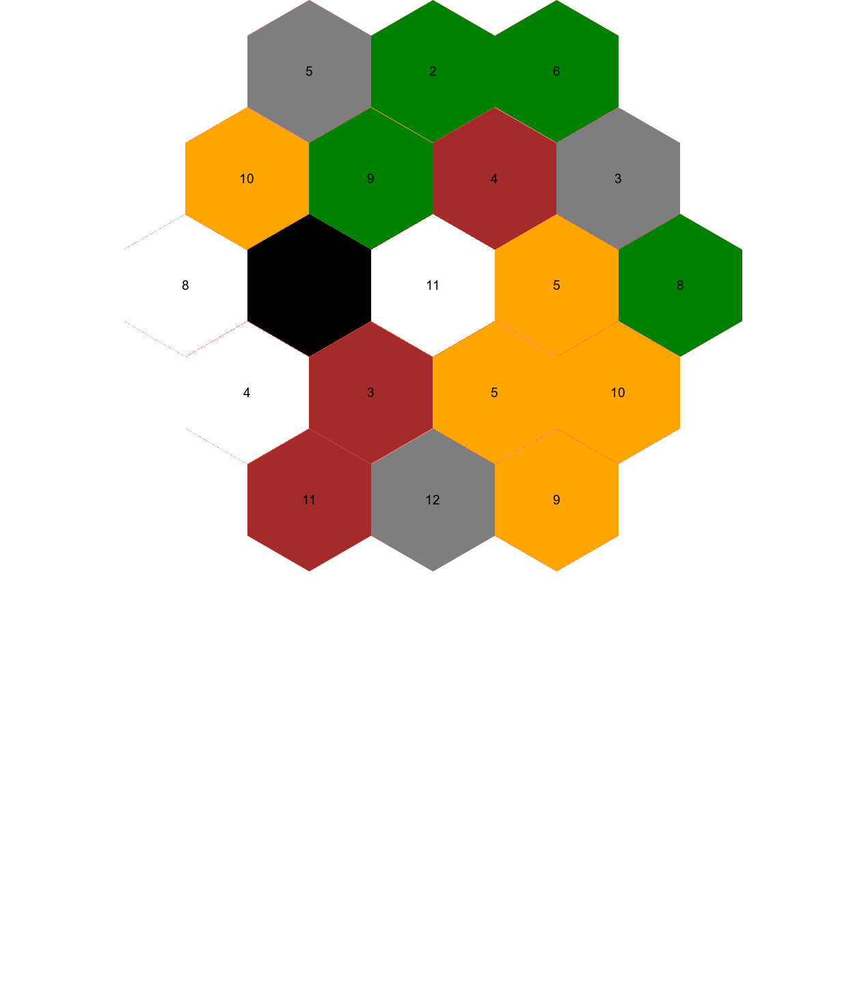

Getting the tiles
As an R user and a massive Settler of Catan fan (I used to play in the morning before going to work) I had been thinking about how to combine the two. I decided that I wanted to create a random board generator. However, just getting a static version of the catan board took me a while so I decided to split this into two blog posts. In the future I will put this into a shiny app so that the board can be generated randomly,
I know that the board is created randomly when you play Catan the regular way but I just think that adding R to it just makes it more fun.
I tried a few different ways of creating the board. My first attempt was to create the edge points and use geom_polygon from ggplot2 to plot them. It turned out that figuring out where those points should be was trickier than I thought and I gave up. After that I tried plotting hexagons using spsample and I played with the hexbin package but I couldn’t get it to work (most likely because I didn’t do enough reading, not because it can’t be done).
I finally got it to work after reading Ma Salmon’s blog post about plotting hexagon stickers using magick.
First sticker/hexagon
I downloaded the hexagon stickers from the hexbin github repository and used the one with the fewest colours as a base. This happened to be a sticker called rangle.
The rangle sticker only has two colours so it is quite easy to make it only one colour using image_fill.
setwd("/Users/emmavestesson/Documents/GitHub/bdown/")
hex_base <- magick::image_read(here::here("rangle.png")) %>%
image_fill("white", point = "+100+100", fuzz = 20) %>%
image_fill("white", point = "+100+200", fuzz = 20)
image_write(hex_base, here("catan hexes/hex_base.png"))I now have my template hexagon. I downloaded some icons to illustrate the different resources. The icons were quite large so I started by trimming the image and the rescaling it. Once the icon is small enough I combine the tile and the icon. The code is the same for all the tile so I have only included the code for the wheat tile.
setwd("/Users/emmavestesson/Documents/GitHub/bdown/")
# wheat
wheat_tile <- hex_base %>%
image_fill("orange", point = "+100+100", fuzz = 20)
wheat_img <- image_read("~/Documents/R folder/Icons_catan/wheat.png")
wheat_img <- image_trim(wheat_img)
wheat_img <- image_crop(wheat_img, geometry_area(1088, 1100, 0,0), repage = FALSE) %>%
image_scale(100)
wheat <- image_composite(wheat_tile, wheat_img, offset = "+40+50") %>%
magick::image_write(here("catan hexes/wheat.png"))Not all resources appear the same number of times so I create a vector with links to image and repeat some of them four times and some three times. I then go on to shuffling the tiles to add the random component and then I read the images.
setwd("/Users/emmavestesson/Documents/GitHub/bdown/")
tiles <- c(rep("catan hexes/wood.png",4), rep("catan hexes/sheep.png",4), rep("catan hexes/wheat.png",4), rep("catan hexes/clay.png" ,3), rep("catan hexes/rock.png",3), "catan hexes/desert.png" )
tiles <- sample(tiles) # change the order at random
read_append <- . %>%
magick::image_read() %>%
magick::image_append()
tiles_image <- map(tiles, read_append)
number_tiles <- c("5", "2", "6", "3", "8", "10", "9","12","11","4", "8","10","9", "4", "5", "6", "3", "11" )The vector number_tiles holds the numbers that should go on the tiles. In real life the tiles are shuffled and placed on the table in a certain order, starting from the top and moving around in a circle until you get to the middle. After that you place one number on each tile skipping the desert. This skipping the desert tile created a bit of a problem. The desert tile should not get a tile so I need to find out where the desert tile is and then add a blank space at that point in the number_tiles vector before adding the number to tiles using image_annotate..
desert_loc <- grep("catan hexes/desert.png", tiles, ignore.case = FALSE, perl = FALSE, value = FALSE,
fixed = FALSE, useBytes = FALSE, invert = FALSE)
number_tiles <- append(number_tiles, " ", after = desert_loc-1)
tiles_with_prob <- map2(tiles_image, number_tiles, ~image_annotate(.x,paste(.y), gravity = "south", location = "+0+20",
degrees = 0, size = 19)) Time to combine all the tiles! This code is very long and repetitive because I need to put down the tiles in a certain order. In my first attempt using hex stickers I created five rows of hexagons and then combined them but then the numbers were wrong as you need to skip a number when the desert tile is plotted.
info <- tiles_with_prob[[1]] %>%
magick::image_info()
height <- info$height
width <- info$width
board <- magick::image_blank(width = width * 6,
height = width * 5 ,
col = "dodgerblue1")
info_board <- image_info(board)
y_adj <- height/5
x_adj <- -width/2
board0 <- image_composite(board,tiles_with_prob[[1]], offset=paste0("+", 2*width + x_adj, "+", 0 + y_adj) )
board1 <- image_composite(board0,tiles_with_prob[[2]], offset=paste0("+", 3*width + x_adj, "+", 0 + y_adj))
board2 <- image_composite(board1,tiles_with_prob[[3]], offset=paste0("+", 4*width + x_adj, "+", 0 + y_adj))
board3 <- image_composite(board2,tiles_with_prob[[4]], offset=paste0("+", 4.5*width + x_adj, "+", height*0.75 + y_adj))
board4 <- image_composite(board3,tiles_with_prob[[5]], offset=paste0("+", 5*width + x_adj, "+", 2*height*0.75 + y_adj))
board5 <- image_composite(board4,tiles_with_prob[[6]], offset=paste0("+", 4.5*width + x_adj, "+", 3*height*0.75 + y_adj))
board6 <- image_composite(board5,tiles_with_prob[[7]], offset=paste0("+", 4*width + x_adj, "+", 4*height*0.75 + y_adj))
board7 <- image_composite(board6,tiles_with_prob[[8]], offset=paste0("+", 3*width + x_adj, "+", 4*height*0.75 + y_adj))
board8 <- image_composite(board7,tiles_with_prob[[9]], offset=paste0("+", 2*width + x_adj, "+", 4*height*0.75 + y_adj))
board9 <- image_composite(board8,tiles_with_prob[[10]], offset=paste0("+", 1.5*width + x_adj, "+", 3*height*0.75 + y_adj))
board10 <- image_composite(board9,tiles_with_prob[[11]], offset=paste0("+", 1*width + x_adj, "+", 2*height*0.75 + y_adj))
board11 <- image_composite(board10,tiles_with_prob[[12]], offset=paste0("+", 1.5*width + x_adj, "+", 1*height*0.75 + y_adj))
board12 <- image_composite(board11,tiles_with_prob[[13]], offset=paste0("+", 2.5*width + x_adj, "+", 1*height*0.75 + y_adj))
board13 <- image_composite(board12,tiles_with_prob[[14]], offset=paste0("+", 3.5*width + x_adj, "+", 1*height*0.75 + y_adj))
board14 <- image_composite(board13,tiles_with_prob[[15]], offset=paste0("+", 4*width + x_adj, "+", 2*height*0.75 + y_adj))
board15 <- image_composite(board14,tiles_with_prob[[15]], offset=paste0("+", 3.5*width + x_adj, "+", 3*height*0.75 + y_adj))
board16 <- image_composite(board15,tiles_with_prob[[17]], offset=paste0("+", 2.5*width + x_adj, "+", 3*height*0.75 + y_adj))
board17 <- image_composite(board16,tiles_with_prob[[18]], offset=paste0("+", 2*width + x_adj, "+", 2*height*0.75 + y_adj))
board18 <- image_composite(board17,tiles_with_prob[[19]], offset=paste0("+", 3*width + x_adj, "+", 2*height*0.75 + y_adj))
board_gif<- image_animate(c(board0, board1, board2, board3, board4, board5, board6, board7, board8,
board9, board10,board11, board12, board13, board14, board15, board16, board17, board18), fps=1)
image_write(board18, "~/Documents/GitHub/bdown/public/2018/03/settlers-of-catan/catan_board.png")
image_write(board_gif, "~/Documents/GitHub/bdown/public/2018/03/settlers-of-catan/board_gif.gif")Here is a gif showing the order that the tiles are plotted. I uploaded the gif to my blog to include because I couldn’t figure out how to include it from disk without installing additional things.
 Static image!
Static image!
